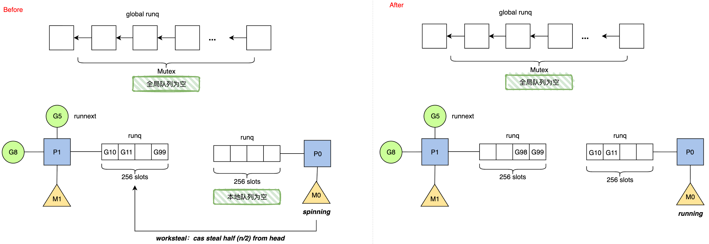
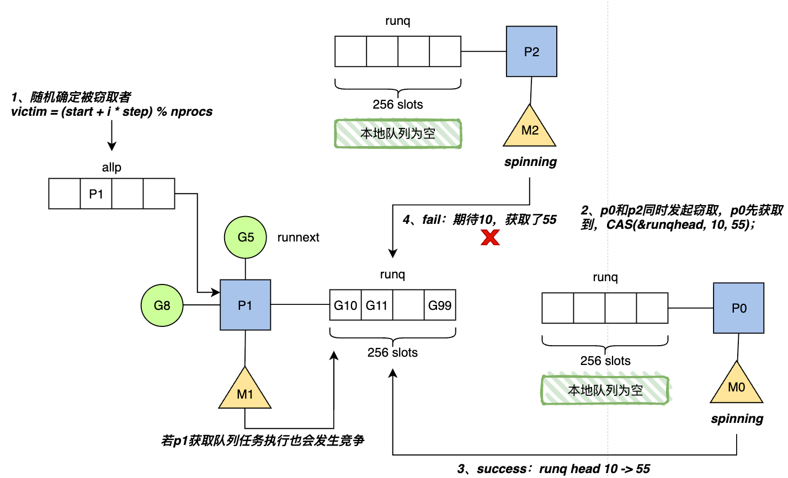

📄 本文共 1941 字，预计阅读 5 分钟
03. Processor(P)
Abstract
Keywords: GMP模型, 本地运行队列, 上下文切换, M:N调度, Work Stealing, 内存亲和性
1. 核心结构
P 代表 Processor（逻辑处理器）。它的数量决定了 Go 程序的最大并行度（由 GOMAXPROCS 决定）。P 是 GMP 模型中的核心资源管理者，它维护了 M 执行 G 所需的上下文环境，如本地任务队列、内存分配缓存等。
1.1 源码核心字段
下面的代码片段基于 Go 1.24+ 版本，筛选了 p 结构中最核心字段（完整结构见 runtime2.go）：
type p struct {
id int32
status uint32 // P 的状态 (如 _Pidle, _Prunning)
link puintptr // 链表指针，用于管理空闲 P (sched.pidle)
// 绑定关系
m muintptr // 回指当前绑定该 P 的 M (如果是空闲 P 则为 nil)
mcache *mcache // 核心：P 本地的内存缓存 (分配微对象无锁)
// 调度队列 (无锁/低锁访问)
// P 的本地 Runnable G 队列，支持无锁入队/出队
runqhead uint32
runqtail uint32
runq [256]guintptr
// 极速插队槽
// 指向下一个优先执行的 G。当 G1 创建 G2 时，G2 会被放入这里，
// 以实现极高的调度亲和性 (Locality)。
runnext guintptr
// 复用池
// 本地空闲 G 列表 (对象池)，避免从全局 gFree 加锁获取
gFree struct {
gList
n int32
}
// 系统监控与管理
sysmontick sysmontick // 记录调度 tick，用于 sysmon 检测抢占
timers *timers // ⚡️ 1.14+ 优化：P 本地管理的定时器堆
// ... 其他字段 (GC 相关, 抢占相关等)
}
1.2 核心字段解析
1. runq (本地运行队列)
这是 GMP 模型性能提升的关键。
- 结构：一个固定容量（256）的环形数组。
- 机制：当 M 持有这个 P 时，从
runq获取 G 是无锁的（或使用极轻量的原子操作 CAS），这彻底消除了旧版 GM 模型中全局队列锁的巨大开销。
2. mcache (本地内存缓存)
这是 Go 内存分配极快的原因。
- 机制：每个 P 都有一个独立的
mcache。当 G 需要分配小对象（<32KB）时，直接从当前 P 的mcache中拿，完全不需要加锁。 - 意义：将内存分配与 P 绑定，而不是与 M 绑定，是因为 M 可能会阻塞或休眠，而 P 始终是活跃的资源。
3. runnext (高优先级插槽)
- 作用：这是一个容量为 1 的“VIP 通道”。
- 场景：当
G1创建了G2，Runtime 会倾向于把G2放入runnext而不是队尾。 - 原理：通常
G2会使用G1刚刚处理过的数据（CPU Cache 是热的），立即执行G2可以大幅提升缓存命中率。
2. 核心机制、状态及生命周期
P 的设计哲学是 “资源化”。它像 CPU 核心一样，是 M 执行代码必须争抢的凭证。
2.1 P 的生命周期
P 的生命周期与程序运行过程紧密相关，且比较稳定，核心状态变换及流程如下图所示：
 图1: p的生命周期及流转
图1: p的生命周期及流转
- 创建：
- 程序启动时，Runtime 会根据
GOMAXPROCS（默认为 CPU 核数）创建所有的 P，并存储在全局变量allp切片中。
- 程序启动时，Runtime 会根据
- 重置：
- 如果在运行时调用
runtime.GOMAXPROCS(n)修改了数量：- 增加：创建新的 P，加入
allp。 - 减少：多余的 P 会被置为
_Pdead，释放其资源，剩下的 G 转移到全局队列。
- 增加：创建新的 P，加入
- 如果在运行时调用
- 销毁：
- P 几乎不会被销毁，除非程序结束或
GOMAXPROCS调小。
- P 几乎不会被销毁，除非程序结束或
- 系统调用：当g的逻辑涉及到系统调用时，p会被置为
_Psyscall状态，并同其绑定的m分离，- fast path: 假如m较快的返回，其会继续同m绑定并返回
_Prunning状态； - slow path: 假如m阻塞时间太长p会同m分离并进入
_Pidle状态，等待其他m的绑定。
- fast path: 假如m较快的返回，其会继续同m绑定并返回
- GC: runtime在垃圾回收的过程中需要暂停m的运行，m会主动释放p，p置为
_Pgcstop状态，当垃圾回收结束，p会置为_Pidle状态一旦其被m绑定会迅速进入_Prunning状态。
P 的状态决定了它是否可用，以及它当前归谁管，下表的信息对P的状态和对应的特征进行了总结，见表1。
| 状态 | 含义 | 行为特征 |
|---|---|---|
_Pidle |
空闲 | 位于全局空闲列表 sched.pidle 中。没有绑定 M，等待被 M (acquirep) 获取。 |
_Prunning |
运行中 | 已经被某个 M 独占绑定。M 正在用它执行 G 或调度逻辑。 |
_Psyscall |
系统调用 | M 拿着它陷入了系统调用。关键点：此时 P 依然保留部分上下文（如 mcache），但它的 runq 可能会被其他 P 偷走。 |
_Pgcstop |
GC 停止 | 被 STW (Stop The World) 暂停。当前 P 里的 G 停止运行，等待 GC 完成。 |
_Pdead |
已死亡 | GOMAXPROCS 减少后，多余的 P 进入此状态，不再被使用。 |
| 表1: p的状态及特征 |
2.2 关键机制
2.1 工作窃取
我们在前文中多次提到了工作窃取机制，由于该机制是不同p之间的交互逻辑，所以这里详细介绍下p的表现及窃取的过程，图2展示了p是如何进行work steal的。
图2: p的work steal机制
{kind=link}
- 查：看
runnext和runq（空）。 - 找：看全局队列（空）。
- 偷：随机选一个 victim P，从它的
runq头部偷走 一半 的 G。
窃取目标的随机性算法： Runtime 采用了 victim = (start + i * step) % nprocs 算法来选取目标 P。
- start: 随机起点。
- step: 与 P 总数互质的步长。
保证了遍历的伪随机性，同时确保能不重不漏地扫描所有 P，避免了全局锁竞争。多 P 竞争示意图如图3所示。  图3: work steal竞争详细机制
{kind=link}
2.2 切换机制 (Handoff P)
这是处理阻塞调用的核心。
- Fast Path：M 进行短时间的 syscall，P 保持
_Psyscall状态，M 回来直接用。 - Slow Path：sysmon 发现 M 阻塞太久，将 P 的状态改为
_Pidle并剥离（Retake）。新的 M 可以获取这个 P，继续执行 P 队列里剩余的 G。这保证了单个 M 的阻塞不会导致整个 P 队列的停滞。 ⚠️：我翻看了_Psyscall in go 1.26的逻辑，_Psyscall的定义已经废弃，详细见源码分析。
2.3 局部性
在之前的GMP模型中我们详细介绍过p的引入是在很大程度上解决全局资源竞争的问题。深入到P的源码定义，会看到很多关于局部性优化的元素。
type p struct {
mcache *mcache // 小对象直接本地分配内存 (无锁)
runq [256]guintptr // 本地 G 队列 (无锁/CAS)
gFree struct { ... } // 本地 G 复用池 (无锁)
sudogcache []*sudog // Channel 阻塞等待结构缓存
deferpool []*_defer // Defer 对象池
timers *timers // 本地定时器堆 (Go 1.14+)
}
上述结构都是P局部性优化的关键，下面的表格简要描述了其维护的本地结构和对应全局结构的功能：
| 资源类型 | P 本地 - 无锁 | 全局 - 有锁 | 作用 |
|---|---|---|---|
| 执行任务 | p.runq (runnext + array) |
sched.runq |
调度任务 |
| Goroutine | p.gFree |
sched.gFree |
复用 G 对象 |
| 内存对象 | p.mcache |
mcentral / mheap |
小对象分配 |
| Channel | p.sudogcache |
sched.sudogcache |
阻塞等待结构 |
| Defer | p.deferpool |
sched.deferpool |
延迟调用结构 |
| Timer | p.timers (1.14+) |
(无全局堆) | 定时器管理 |
3. 总结
P 是 Go 调度器中承上启下的关键组件，其设计哲学可以总结为三点：
- 局部性原理 (Locality)： 通过 mcache 和本地 runq，将数据和任务尽可能限制在本地，大幅减少了 CPU 缓存失效和锁竞争。
- 解除 M 与资源的强绑定： 在 GM 模型中，内存和队列是全局的；在 GMP 模型中，资源跟着 P 走。M 只是执行者，谁拿到了 P，谁就拥有了资源。这使得 M 可以频繁阻塞/创建，而核心计算资源（P）始终保持忙碌。
- 负载均衡 (Load Balancing)： 通过 Work Stealing 和 Handoff 机制，P 实现了在多核 CPU 上的自适应任务分发，既避免了饥饿，也避免了过载。